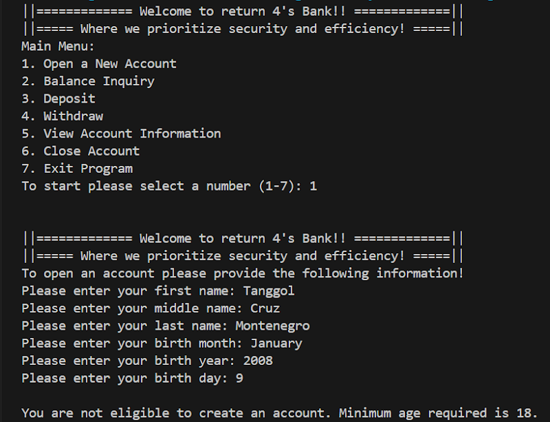
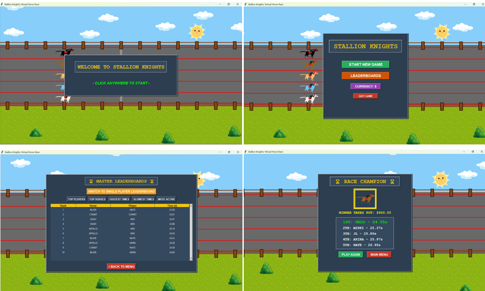
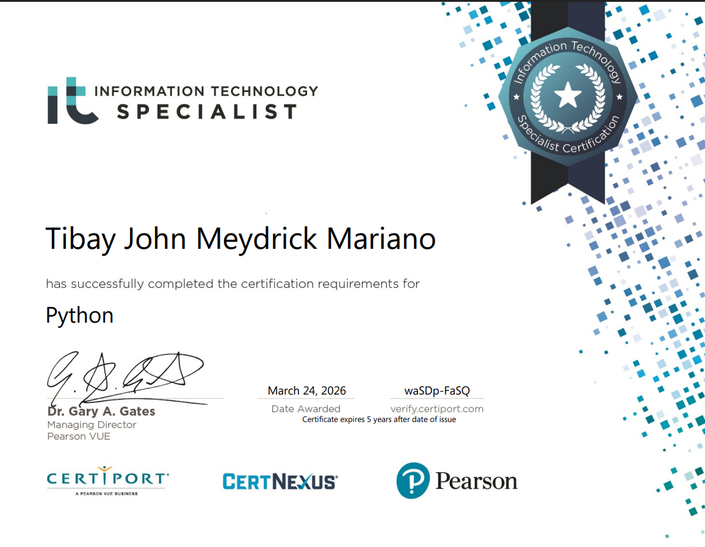
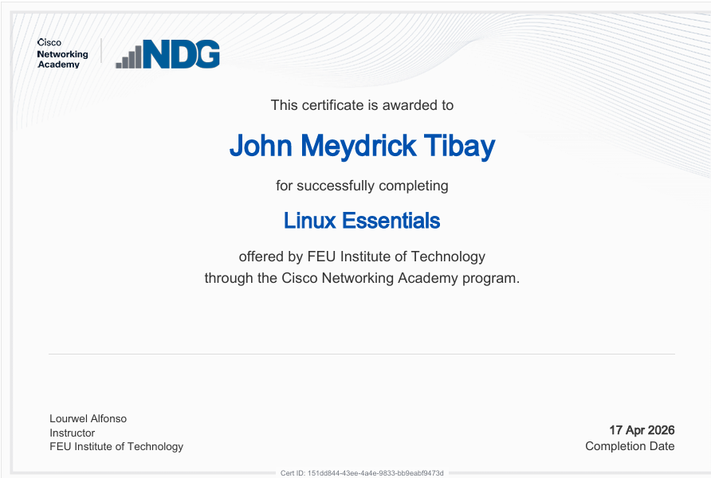

Business Analyst
an Information Technology student specializing in Business Analytics. I thrive at the intersection of programming and data science, utilizing tools like Python and Pandas to uncover patterns that drive efficiency. Through my project work, I translate intricate data models into clear, meaningful narratives.
I'm currently taking my Bachelor of Science in Information Technology with a specialization in Business Analytics at FEU Institute of Technology. Throughout my academic career, I have dedicated myself to mastering the tools required to navigate complex information landscapes. I approach every project with a commitment to analytical rigor, ensuring that the solutions I build are not only functional but also aligned with clear business objectives. Beyond the immediate technical requirements of a project, I am deeply interested in the broader impact of data-driven decision-making in today's evolving market.
I am a continuous learner, constantly refining my development workflows and expanding my technical certifications to ensure my approach remains relevant and high-impact. I am eager to apply my discipline and analytical mindset to solve complex challenges and contribute to data-forward initiatives.

Banking System is a console-based application developed in C++ that simulates essential banking operations such as opening a new account, balance inquiry, deposit, withdrawal, and account management. The program demonstrates key C++ concepts including classes, object-oriented programming, data validation, and control structures while featuring a user-friendly menu-driven interface.
This project also implements input validation logic, such as enforcing a minimum age requirement of 18, showcasing practical application of conditional statements, loops, and structured programming principles in C++.

a Virtual Horse Race is a 2D horse-racing designed for offline single player and include multiple players on a single device, making it appropriate for small gatherings and casual entertainment. Every race uses randomized movement to ensure fairness and keep every round unpredictable and exciting.
This project was chosen to create a simple multiplayer game that does not require an internet connection while still playing providing an engaging experience for players. It also serves as an opportunity to apply Python Programming Concepts such as Object-Oriented Programming and graphical interface development using the Tkinter user interface module.


FEU Institute of Technology • Manila, Philippines
2024 – 2028 | Specialization in Business Analytics
FEU High School • Manila, Philippines
2021 – 2023 | STEM (Science, Technology, Engineering, Mathematics) Strand